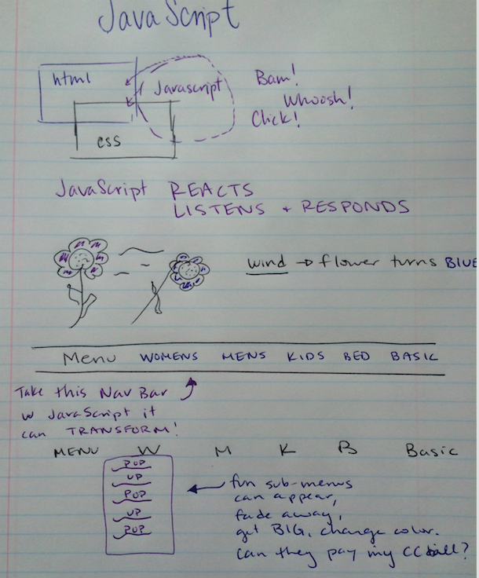
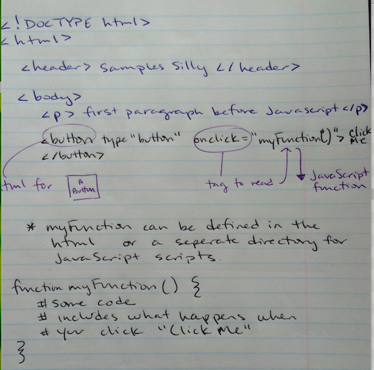
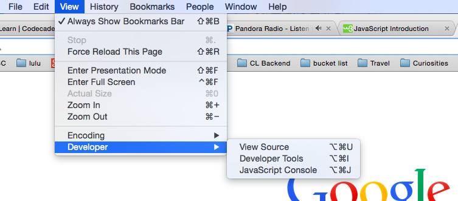
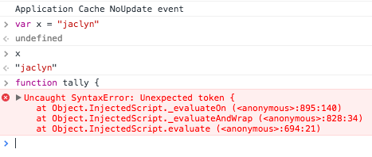

How Does JavaScript work?
Big Picture
here's how that looks in html
Playing with JavaScript code
I also have learned that playing with the code in the scripts is best from a browser because that is where JavaScript truly shines. Running the code from my terminal to check that the code will execute is great but doesn't show me the power and beauty of transforming my html and css into what I asked JavaScript to do.
How do I check what my JavaScript is doing from my browser? I learned that yesterday!
Now you can execute your code and see what happens in the browser. Does your button work? Did the nav bar text float away? Does your song play when you click 'play'? Did a unicorn fly across your page?
